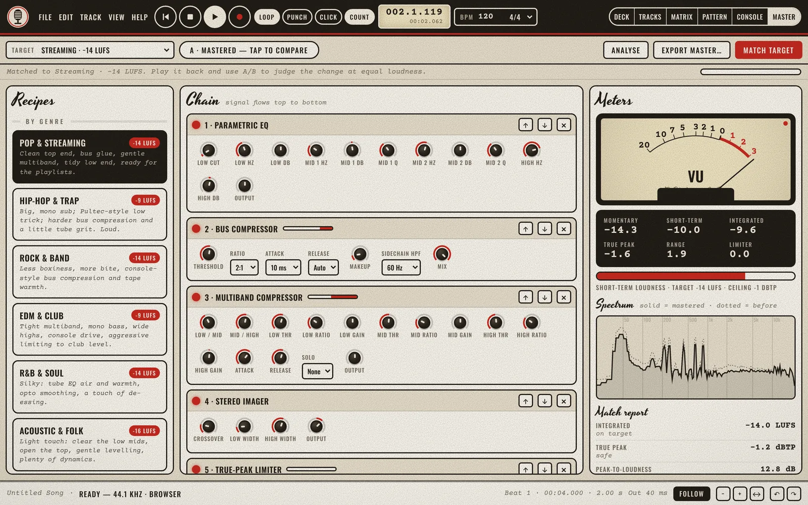
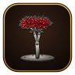
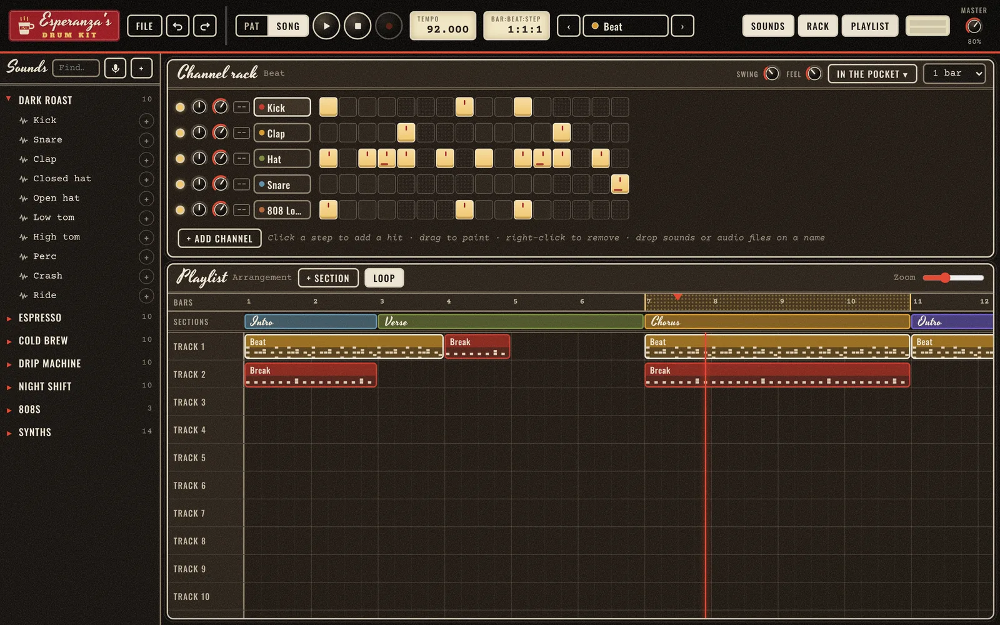
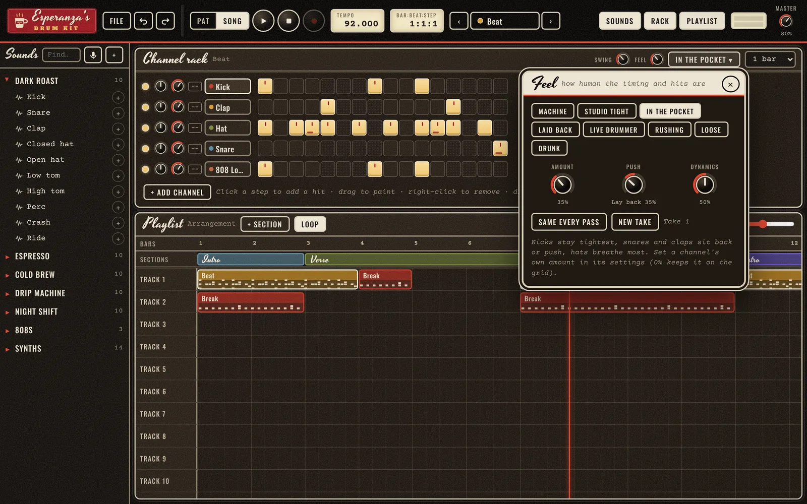
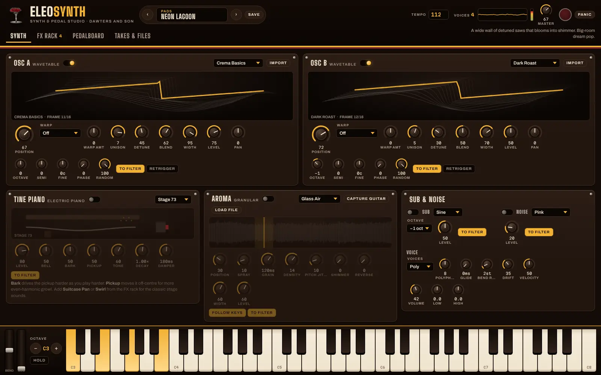

DAWters & Son
Record, mix, master and tune on your Mac, PC, Ubuntu machine, Android phone or in a browser. Every feature, for everyone, forever. It’s open source and it’s a gift.
No sign-up. No tracking. No subscription. No ads. No track limit.

feature
One plan. It’s free.
Most studios come in three tiers, and the good parts live in the expensive one. We skipped that.
The usual way
Upgrade prompts, feature locks, a login to open your own songs.
- Unlimited audio & instrument tracks
- Mixbus-style console, 4 buses
- Synth, drum machine, sampler
- Piano roll, GrooveMatrix, MIDI
- 24 effects, all with live audition
- Mastering tab with 16 recipes
- Noise removal and a tuner
- MP3, AAC, Ogg, Opus, FLAC, WAV
Everything, start to finish.
From the first take to a file that’s ready for streaming, it all happens in one app.
As many tracks as you like
Arm several tracks at once, punch in and out, loop-record takes, and record over a part without hearing the old one. Latency is measured and corrected for you.
A console with a knob for everything
Every strip has trim, filters, a four-band EQ, gate, compressor, tape and eight inserts. There are four mixbuses, and the master has true-peak limiting.
Instruments, patterns, MIDI
A synth with 14 presets, a drum machine, a sampler, a piano roll and step grid, and a GrooveMatrix for launching patterns live. Plug in a MIDI keyboard and play.
16 mastering recipes
Pick Pop, Hip-hop, Rock, Lo-fi, Podcast and more. Match a loudness target like −14 LUFS in one click, then A/B at equal loudness so you judge the sound and not the volume.
Hear it before you keep it
Limiter, multiband, FET, opto and bus compressors, saturator, tube EQ, de-esser, doubler, tape echo, reverbs and more. Every effect has a Listen button with test sounds.
Noise removal and a tuner
Sample a second of hiss and take it out of a whole take. Tune guitar, bass, uke or violin with a big, readable needle that works in the dark.
Have a look around.
Every picture here is the app itself, not a mockup.
Free, without the fine print.
Plenty of studios have a free version. Here’s where theirs stop and ours keeps going.
| Free option | Runs on | Account | Track limit | Main catch |
|---|---|---|---|---|
| DAWters & Son | Mac, Windows, Ubuntu, Android, browser | None | Unlimited | No third-party plugins yet |
| Cakewalk Sonar (free tier) | Windows | BandLab account, periodic online reactivation | Unlimited | Core plugins and stretching held back |
| Waveform Free | Windows, Mac | Tracktion account | Unlimited | Clip launcher, chord and arranger tracks are paid |
| BandLab | Browser, iOS, Android | Required | 16 tracks, 15 minutes | Ads, no plugins |
| Pro Tools Intro | Windows, Mac | Required | 8 audio tracks | AAX plugins only |
| GarageBand | Mac, iPhone, iPad | Apple ID | 255 on Mac | Apple devices only |
| LMMS | Windows, Mac, Linux | None | Unlimited | Can’t record audio |
| Audacity | Windows, Mac, Linux | None | Unlimited | An editor: no MIDI or instruments |
Other products as described in Dubspot’s “Best Free DAWs in 2026” (blog.dubspot.com). Check each maker’s site for current terms.
Pick your machine.
Every version is the same studio, with the same features and the same song files, so you can start on your phone and finish on your desk.
The installers aren’t signed with paid certificates yet, so your computer may ask you to confirm the first time. The steps on each card show how.
Now with a beat studio and a synth.
DAWters & Son has two siblings. Make the beat in Esperanza’s Drum Kit, find the sound in Eleosynth, then record and master it all here. Same promise: free, open source, no tracking.
DAWters & Son
The multitrack studio you’re looking at: unlimited tracks, the console, 24 effects, mastering and the tuner.
 Esperanza’s Drum Kit
Esperanza’s Drum Kit
A pattern-based beat studio with a channel rack, a playlist with song sections, five drum kits, 808s and synths, and a Feel dial that makes programmed beats play like a person. On Android and in the browser.
Meet Esperanza’s Drum Kit
Eleosynth Synth & pedalsA wavetable, tine-piano and granular synthesizer you can plug your guitar into: 39 effects, a full pedalboard, a tuner, and guitar-to-synth tracking.
See Eleosynth
Meet Esperanza’s Drum Kit.
A pattern-based beat studio with a channel rack, a playlist and a Feel dial. Make the beat there, record vocals over it here.
The best part of breaking down.

- Program it, arrange itA channel rack of steps, patterns on a playlist, and song sections from intro to outro that you can loop, duplicate or export on their own.
- A Feel dial that plays like a personTurn from Machine to Drunk. Kicks stay tight, snares lay back, hats breathe, and the same take plays the same every loop.
- Made to work with this studioExport the beat as a WAV or MP3, or record your own sounds into it, then drop the beat onto a track here and record over it.
Meet Eleosynth.
A synthesizer and a guitar pedalboard poured into one. Build the sound there, record it here.

- Six sound sourcesTwo wavetable oscillators, a tine electric piano, a granular layer, sub and noise, through a drifting ladder filter.
- Plug in your guitarA pedalboard built from the same 39 effects, a tuner, a looper, and Guitar → Synth tracking that plays the patch from your strings.
- Made to work with this studioRecord a take in Eleosynth, save it as a 24-bit WAV and drop it onto a track here.
It’s a gift.
Making music shouldn’t start with a credit card. A kid with a hand-me-down laptop, a songwriter on a phone and a podcaster in a closet all deserve the same tools as a paid studio.
So DAWters & Son is open source, and every feature is in every copy. There’s no premium tier waiting behind a button, no account to keep you logged in, and no expiry date. The code is public, so anyone can check it, improve it or keep it going.
If it helps you make something, that’s the whole point.
Asked and answered.
Is it really free? What’s the catch?
There isn’t one. There are no paid tiers, no ads, no account, no trial and no data collection. The source code is public under an open-source license, so it stays free.
Do I need to sign up, or be online?
No. Download it and it works offline. Your songs are saved on your device as .dawters files, and those open on any version.
Does it track me?
No. The app has no analytics, no telemetry and no “phone home”. It never sends anything over the internet; your recordings and settings stay on your device. You can read the source to check.
Can I sell music I make with it?
Yes. Your recordings are yours. The license covers the app’s code, not what you make with it.
Does it load VST or AU plugins?
Not yet. It ships with 24 built-in effects and three instruments. Plugin hosting is on the roadmap for the desktop versions.
Why does my computer warn me when I install it?
Mac and Windows show a warning for apps that aren’t signed with a paid developer certificate. The app is safe and the code is public. Each download card shows the two clicks that get past the warning.
Will it run on my phone or tablet?
Yes, on Android 7 or newer. The Deck view has big controls built for touch: swipe a track right for its settings and left for its effects. There’s no iPhone or iPad version yet.
Is there a synth I can plug my guitar into?
Yes: Eleosynth, the suite’s synthesizer and pedalboard. It has wavetables, a tine electric piano, granular textures and 39 effects, and it can play its synth from your guitar. It’s free and open source too; its website is linked in the Eleosynth section above.
Is there a beat maker?
Yes: Esperanza’s Drum Kit, the suite’s pattern-based beat studio. It’s free and open source too, and shares this app’s sound engine. Its website is linked in the suite section above.
Does MIDI work?
Yes, in the desktop versions and in Chrome or Edge. On Android, use the on-screen keyboard and drum pads for now.
How do I get help or report a bug?
Open an issue on the project’s code page with what you did, what you expected and what happened. Include your platform and version (see Help › About).